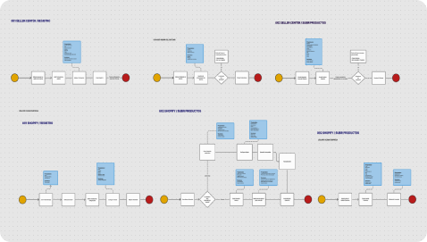
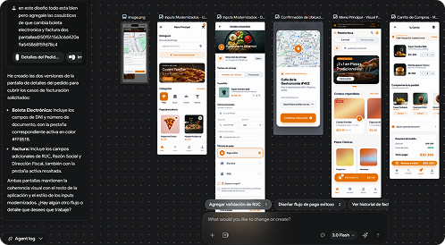
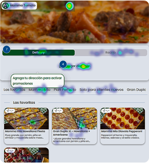
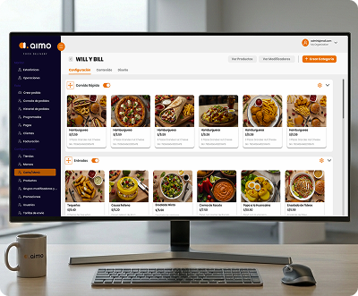
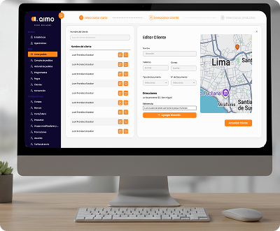
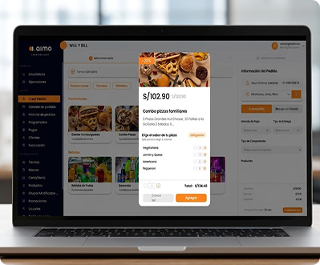
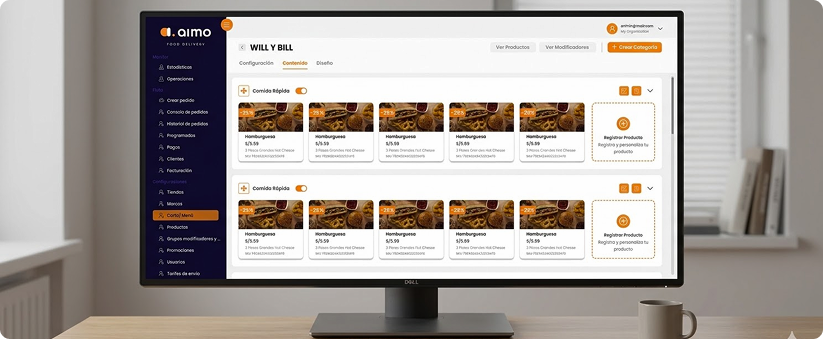
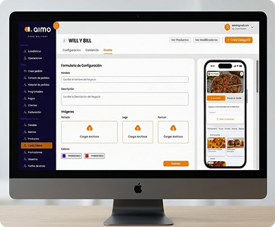

Simplificando el Ciclo
de Activación de Food Delivery.
Lideré el rediseño del onboarding de extremo a extremo. Estos son los resultados medidos contra la línea base previa al lanzamiento.
Product Designer
Research · UX · UI · Handoff
Producto + 2 devs
≈ 10 semanas
GA4 · Mixpanel · Clarity · Figma
Completitud de onboarding
+32% relativo · GA4, 6 semanas post-launch (n≈900)
Tasa de abandono
−27% · funnel GA4 + grabaciones de Clarity
Creación de tiendas
Cohortes en Mixpanel vs. trimestre anterior
Conversión final
Test A/B en GA4 sobre el flujo de publicación
Métricas medidas contra la línea base previa a cada rediseño. Valores relativos salvo indicación contraria.
El Problema: Sobrecarga Cognitiva
Los usuarios abandonaban frecuentemente la plataforma durante la "Primera Milla". La documentación compleja y los procesos de configuración fragmentados generaban una tasa de abandono del 65% antes de concretar el primer pedido.
Solución UX: El Motor Progresivo
Sustituimos los formularios densos por una experiencia de Onboarding basada en micro-pasos. Los ciclos de retroalimentación en tiempo real y la progresión gamificada redujeron el tiempo de obtención de valor en un 82%.
Mapeando el Comportamiento del Usuario.
El Comerciante Ágil
TOMADOR DE DECISIONES- Activación rápida de tienda
- Automatización de inventario
- Alta barrera tecnológica
- Entrada manual de datos
"Necesito que mi vitrina digital sea tan operativa como mi tienda física, sin pasar horas configurándola."
El Consumidor Directo
USUARIO FINAL- Precisión en tiempo real
- Fulfillment en un clic
- Estatus de entrega opaco
- Fragmentación del carrito
"La visibilidad es mi moneda de cambio. Si no puedo ver exactamente dónde está mi pedido, pierdo la confianza en el servicio."
Flujo de Onboarding Kinético.
Visualización de la transición optimizada de 7 pasos, desde la identidad inicial hasta la presencia en vivo en el mercado.
Autenticación & Contextualización
Captura de credenciales seguras y recorrido interactivo inicial para reducir el "blank slate syndrome".
Estructura de Catálogo
Organización lógica de categorías y carga masiva de productos optimizada por IA para mapeo automático.
Estética & Control de Calidad
Configuración de identidad visual y simulación en tiempo real del flujo del usuario final antes del despliegue.
Lanzamiento al Ecosistema
Distribución instantánea en la red de entrega con propagación de caché global sin latencia.
Integridad Visual a Escala.
Nuestro Design System está construido sobre precisión matemática, asegurando que cada píxel cumpla un propósito en el ecosistema logístico.
Átomos
Escalas definidas por luminancia y la regla de "No-Line" para la elevación.
Moléculas
Badges de estado interactivos y clusters de búsqueda predictiva.
Organismos
Dashboards dinámicos de gestión de flota y mapas en tiempo real.
IA & Creative Workflow
Integrando herramientas de inteligencia artificial para acelerar la producción de alta fidelidad sin comprometer la calidad.
Diagrama de Flujos
Generación de mapa de Flujo en todo requerimiento utilizado para el proyecto, para el mejor entendimiento del Developer, teniendo un producto documentado y preciso.

STICH (IA) Integration
Uso de Stitch para la generación de texturas dinámicas, recursos visuales abstractos y apoyo en la creación de interfaces, facilitando la exploración rápida de estilos.

Inteligencia Estratégica & Medición de Usuarios
UX + Data = Decisiones Efectivas. Como Senior Designer, mi enfoque no es solo estético, sino validado. Cada micro-interacción se mide para garantizar que estamos eliminando la fricción y maximizando el valor de negocio.
Google Analytics 4 (GA4)
Implementamos un monitoreo continuo del comportamiento del usuario para analizar la evolución de sesiones, transacciones y tasas de conversión.
Microsoft Clarity
El análisis de mapas de calor y grabaciones de sesiones reveló fricciones invisibles en la búsqueda de productos, validando la necesidad de eliminar Pop ups invasivos.

Insights Hallados & Fricciones Detectadas.
A través de pruebas de usabilidad y grabaciones en vivo, identificamos patrones críticos de sobrecarga cognitiva causados por una arquitectura de avisos intrusiva.
"El pop-up de confirmación de Dirección interrumpe mi flujo justo cuando estoy por Añadir un producto."
Impacto: Incremento en el tiempo de tarea de un 40% debido a micro-interrupciones.
"Hay demasiados avisos intrusivos que no me dejan ver el progreso de mi tienda."
Impacto: Desorientación del usuario al ocultar elementos clave de la interfaz secundaria.
"Siento que la interfaz me presiona con tantas alertas antes de terminar una tarea."
Impacto: El 22% de los usuarios reportaron estrés visual durante el proceso de onboarding.




